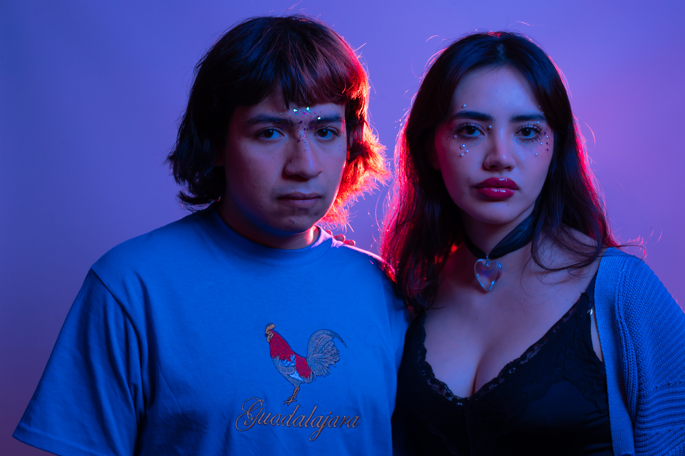

En vivo
Una noche donde las luces y los sonidos comenzaron un nuevo viaje.

Backstage
Instantes de calma antes de subir al escenario.

Escenarios
Cada escenario representa una nueva historia por contar.

Recuerdos
Momentos que permanecen vivos entre canciones y fotografías.

Luces
Las luces transforman cada presentación en un universo distinto.

El viaje continúa
Seguimos recorriendo caminos acompañados por nuestra música.

Conexión
Cada presentación nos acerca un poco más a quienes escuchan.

Nuestro universo
Paisajes que existen entre la nostalgia y los sueños.

Encuentros
Personas, canciones y momentos compartidos en cada ciudad.

Escena Indie
Compartiendo escenario con proyectos que inspiran nuestro camino.

Ensayos
Todo comienza mucho antes de que las luces se enciendan.

Noches
Las mejores historias siempre suceden después del atardecer.

El camino
Cada paso nos acerca a un nuevo capítulo de nuestra historia.

Instantes
Pequeños momentos que permanecen mucho después del último acorde.

Hasta la próxima
Cada fotografía es un recuerdo que seguirá viajando con nosotros.